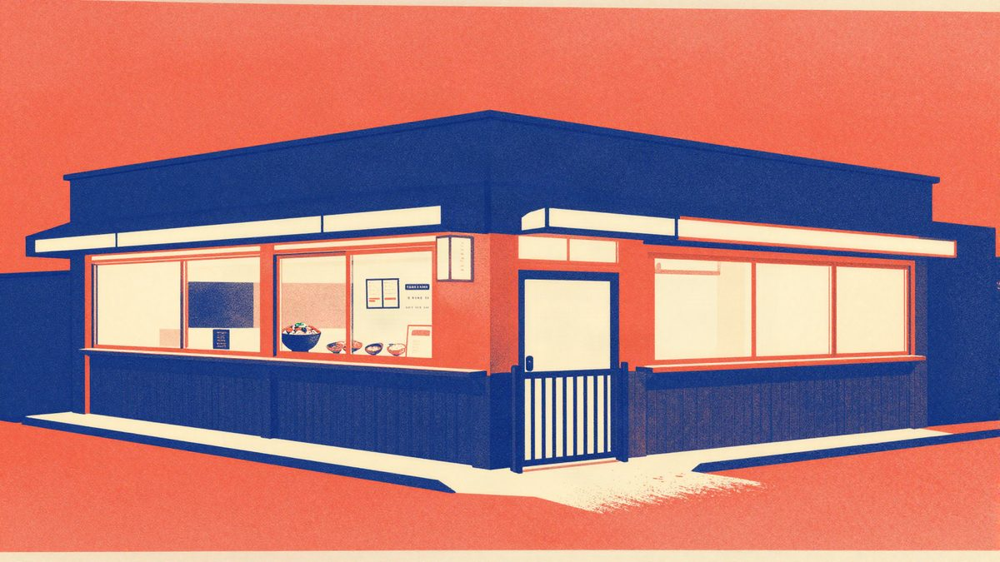

Cortical Labs je povezao 15 bioloških računala u sustav HIVE

Australski Cortical Labs je predstavio HIVE, sustav koji povezuje 15 CL1 bioloških računala i raspodjeljuje zadatke među njima. Tvrtka tvrdi da takav pristup daje bolju točnost, stabilnost i otpornost nego pojedinačne jedinice. U testovima su zajednički rad i podjela zadataka donijeli bolje rezultate od DQN modela i najboljeg pojedinačnog uređaja.
Australski Cortical Labs je na prvoj International Conference on Organoid Intelligence u Washingtonu predstavio HIVE, sustav koji povezuje 15 svojih CL1 bioloških računala. Ideja je da više skupova živih neurona zajednički rješava zadatke, umjesto da svaka jedinica radi zasebno. Tvrtka tvrdi da takav pristup daje veću točnost, stabilnost i otpornost sustava.
U testu prepoznavanja simbola Cortical navodi da je povezivanje sedam bioloških računala podiglo točnost s oko 80% na 99%. U drugom zadatku, u kojem je virtualni lik morao pronaći cilj u mreži, HIVE je uspoređen s klasičnim modelom Deep Q Networka, koji se oslanja na algoritme, a ne na neuronske stanice.
DQN je ostvario oko 32% maksimalnog rezultata. Najbolje pojedinačno Corticalovo računalo došlo je do oko 40%. Kada su više bioloških računala zajedno odlučivala o potezima, rezultat je narastao na oko 70%. Kada su zadaci podijeljeni među specijaliziranim skupinama, rezultat je prema tvrdnji tvrtke dosegnuo oko 80%.
Iz tvrtke kažu da neuronske kulture mogu imati različitu izvedbu iz dana u dan, pa povezivanje više jedinica smanjuje utjecaj pojedinačnih oscilacija. HIVE bi, prema Corticalu, mogao nastaviti raditi i ako jedna skupina prestane reagirati. Johnson Zhou, znanstvenik u Cortical Labsu, rekao je da zajednički rad kultura smanjuje utjecaj individualnih razlika i pomaže iskoristiti prilagodljivost bioloških sustava.
Tvrtka navodi i da je ovakav pristup energetski učinkovitiji od uobičajenog machine learninga. Rezultati su zasad preliminarni i ograničeni eksperimentalnim postavkama te modelom s kojim je HIVE uspoređivan. Cortical Labs sada želi detaljnije proučiti kako neuroni međusobno šalju signale i može li veći broj povezanih jedinica donijeti još bolji rezultat.
Izvor: New Atlas
Povezani članci
 OpenAI je predstavio GPT-6.1 Terra: jeftiniji API i jače upravljanje računalom27. listopada 2026.
OpenAI je predstavio GPT-6.1 Terra: jeftiniji API i jače upravljanje računalom27. listopada 2026.
McDonald’s Japan? Ne, Matsuya: procurili podaci 2,38 milijuna korisnika aplikacije30. listopada 2026. Samsungovoj perilici je vraćen internet nakon gašenja podrške, uz pomoć Claude AI-ja26. listopada 2026.
Samsungovoj perilici je vraćen internet nakon gašenja podrške, uz pomoć Claude AI-ja26. listopada 2026.